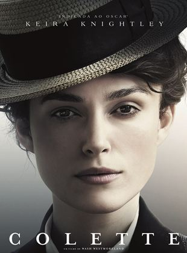
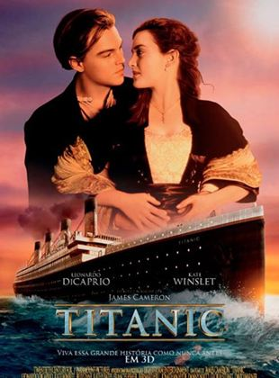
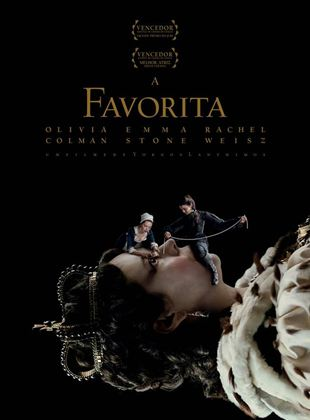
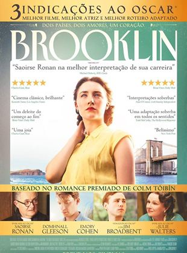

10 Melhores Filmes de Época
Colette

Diretor: Wash Westmoreland
Ano: 2018
Colette (Keira Knightley) é uma romancista francesa que sofre com o seu casamento abusivo e com o seu parceiro que tenta ganhar créditos em cima de suas obras de maneira ilegal. Para superá-lo, ela emerge como uma grande escritora no seu país e, consequentemente, como uma candidata para o Prêmio Nobel em Literatura.
Emma
Diretor: Autumn de Wilde
Ano: 2020
Na adaptação da famosa obra de Jane Austen, Emma Woodhouse (Anya Taylor-Joy) é uma jovem rica e inteligente, que não tem pretensões de se casar tão cedo para ficar sempre perto do pai. Porém, isso não a impede de dar uma de 'casamenteira', tentando juntar casais que considere apropriados entre seus conhecidos, sem perceber os problemas causados com sua imaginação e teimosia.
Lincoln
Diretor: Steven Spielberg
Ano: 2013
Baseado no livro “Team of Rivals: The Genius of Abraham Lincoln”, de Doris Kearns Goodwin, o filme se passa durante a Guerra Civil norte-americana, que acabou com a vitória do Norte. Ao mesmo tempo em que se preocupava com o conflito, o o 16º presidente norte-americano, Abraham Lincoln (Daniel Day-Lewis), travava uma batalha ainda mais difícil em Washington. Ao lado de seus colegas de partido, ele tentava passar uma emenda à Constituição dos Estados Unidos que acabava com a escravidão.
Titanic

Diretor: James Cameron
Ano: 1997
Jack Dawson (Leonardo DiCaprio) é um jovem aventureiro que, na mesa de jogo, ganha uma passagem para a primeira viagem do transatlântico Titanic. Trata-se de um luxuoso e imponente navio, anunciado na época como inafundável, que parte para os Estados Unidos. Nele está também Rose DeWitt Bukater (Kate Winslet), a jovem noiva de Caledon Hockley (Billy Zane). Rose está descontente com sua vida, já que sente-se sufocada pelos costumes da elite e não ama Caledon. Entretanto, ela precisa se casar com ele para manter o bom nome da família, que está falida. Um dia, desesperada, Rose ameaça se atirar do Titanic, mas Jack consegue demovê-la da ideia. Pelo ato ele é convidado a jantar na primeira classe, onde começa a se tornar mais próximo de Rose. Logo eles se apaixonam, despertando a fúria de Caledon. A situação fica ainda mais complicada quando o Titanic se choca com um iceberg, provocando algo que ninguém imaginava ser possível: o naufrágio do navio.
O Jogo da Imitação
Diretor: Morten Tyldum
Ano: 2014
Durante a Segunda Guerra Mundial, o governo britânico monta uma equipe que tem por objetivo quebrar o Enigma, o famoso código que os alemães usam para enviar mensagens aos submarinos. Um de seus integrantes é Alan Turing (Benedict Cumberbatch), um matemático de 27 anos estritamente lógico e focado no trabalho, que tem problemas de relacionamento com praticamente todos à sua volta. Não demora muito para que Turing, apesar de sua intransigência, lidere a equipe. Seu grande projeto é construir uma máquina que permita analisar todas as possibilidades de codificação do Enigma em apenas 18 horas, de forma que os ingleses conheçam as ordens enviadas antes que elas sejam executadas. Entretanto, para que o projeto dê certo, Turing terá que aprender a trabalhar em equipe e tem Joan Clarke (Keira Knightley) sua grande incentivadora.
A Favorita

Diretor: Yorgos Lanthimos
Ano: 2018
Na Inglaterra do século XVIII, Sarah Churchill, a Duquesa de Marlborough (Rachel Weisz) exerce sua influência na corte como confidente, conselheira e amante secreta da Rainha Ana (Olivia Colman). Seu posto privilegiado, no entanto, é ameaçado pela chegada de Abigail (Emma Stone), nova criada que logo se torna a queridinha da majestade e agarra com unhas e dentes à oportunidade única.
Estrelas Além do Tempo

Diretor: Theodore Melfi
Ano: 2017
1961. Em plena Guerra Fria, Estados Unidos e União Soviética disputam a supremacia na corrida espacial ao mesmo tempo em que a sociedade norte-americana lida com uma profunda cisão racial, entre brancos e negros. Tal situação é refletida também na NASA, onde um grupo de funcionárias negras é obrigada a trabalhar a parte. É lá que estão Katherine Johnson (Taraji P. Henson), Dorothy Vaughn (Octavia Spencer) e Mary Jackson (Janelle Monáe), grandes amigas que, além de provar sua competência dia após dia, precisam lidar com o preconceito arraigado para que consigam ascender na hierarquia da NASA.
Carol
Diretor: Todd Haynes
Ano: 2015
A jovem Therese Belivet (Rooney Mara) tem um emprego entediante na seção de brinquedos de uma loja de departamentos. Um dia, ela conhece a elegante Carol Aird (Cate Blanchett), uma cliente que busca um presente de Natal para a sua filha. Carol, que está se divorciando de Harge (Kyle Chandler), também não está contente com a sua vida. As duas se aproximam cada vez mais e, quando Harge a impede de passar o Natal com a filha, Carol convida Therese a fazer uma viagem pelos Estados Unidos.
12 Anos de Escravidão
Diretor: Steve McQueen
Ano: 2013
1841. Solomon Northup (Chiwetel Ejiofor) é um escravo liberto, que vive em paz ao lado da esposa e filhos. Um dia, após aceitar um trabalho que o leva a outra cidade, ele é sequestrado e acorrentado. Vendido como se fosse um escravo, Solomon precisa superar humilhações físicas e emocionais para sobreviver. Ao longo de doze anos ele passa por dois senhores, Ford (Benedict Cumberbatch) e Edwin Epps (Michael Fassbender), que, cada um à sua maneira, exploram seus serviços.
Brooklyn

Diretor: John Crowley
Ano: 2015
A jovem irlandesa Ellis Lacey (Saoirse Ronan) se muda de sua terra natal e vai morar em Brooklyn para tentar realizar seus sonhos. No ínicio de sua jornada nos Estados Unidos, ela sente falta de sua casa, mas ela vai tentando se ajustar aos poucos até que conhece e se apaixona por Tony (Emory Cohen), um bombeiro italiano. Logo, ela se encontra dividida entre dois países, entre o amor e o dever.